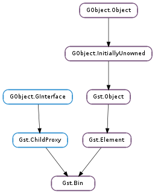

| Subclasses: | Gst.Pipeline |
|---|
| static | new(name) |
| add(element) | |
| find_unlinked_pad(direction) | |
| get_by_interface(iface) | |
| get_by_name(name) | |
| get_by_name_recurse_up(name) | |
| iterate_all_by_interface(iface) | |
| iterate_elements() | |
| iterate_recurse() | |
| iterate_sinks() | |
| iterate_sorted() | |
| iterate_sources() | |
| recalculate_latency() | |
| remove(element) |
| Name | Type | Flags | Description |
|---|---|---|---|
| async-handling | bool | r/w | The bin will handle Asynchronous state changes |
| message-forward | bool | r/w | Forwards all children messages |
| Name | Parameters | Return | Description |
|---|---|---|---|
| do-latency | bool | Will be emitted when the bin needs to perform latency calculations. This signal is only emited for toplevel bins or when async-handling is enabled. Only one signal handler is invoked. If no signals are connected, the default handler is invoked, which will query and distribute the lowest possible latency to all sinks. Connect to this signal if the default latency calculations are not sufficient, like when you need different latencies for different sinks in the same pipeline. | |
| element-added | Gst.Element | Will be emitted after the element was added to the bin. | |
| element-removed | Gst.Element | Will be emitted after the element was removed from the bin. |
| Name | Type | Access |
|---|---|---|
| child_bus | Gst.Bus | r |
| children_cookie | int | r |
| clock_dirty | bool | r |
| clock_provider | Gst.Element | r |
| element | Gst.Element | r |
| numchildren | int | r |
| polling | bool | r |
| provided_clock | Gst.Clock | r |
| state_dirty | bool | r |
Bases: Gst.Element, Gst.ChildProxy
Gst.Bin is an element that can contain other Gst.Element, allowing them to be managed as a group. Pads from the child elements can be ghosted to the bin, see Gst.GhostPad. This makes the bin look like any other elements and enables creation of higher-level abstraction elements.
A new Gst.Bin is created with Gst.Bin.new (). Use a Gst.Pipeline instead if you want to create a toplevel bin because a normal bin doesn’t have a bus or handle clock distribution of its own.
After the bin has been created you will typically add elements to it with Gst.Bin.add (). You can remove elements with Gst.Bin.remove ().
An element can be retrieved from a bin with Gst.Bin.get_by_name (), using the elements name. Gst.Bin.get_by_name_recurse_up () is mainly used for internal purposes and will query the parent bins when the element is not found in the current bin.
An iterator of elements in a bin can be retrieved with Gst.Bin.iterate_elements (). Various other iterators exist to retrieve the elements in a bin.
Gst.Object.unref () is used to drop your reference to the bin.
The Gst.Bin ::element-added signal is fired whenever a new element is added to the bin. Likewise the Gst.Bin ::element-removed signal is fired whenever an element is removed from the bin.
Notes
A Gst.Bin internally intercepts every Gst.Message posted by its children and implements the following default behaviour for each of them:
A Gst.Bin implements the following default behaviour for answering to a Gst.Query:
A Gst.Bin will by default forward any event sent to it to all sink elements. If all the sinks return True, the bin will also return True, else False is returned. If no sinks are in the bin, the event handler will return True.
Last reviewed on 2012-03-28 (0.11.3)
| Parameters: | name (str) – the name of the new bin |
|---|---|
| Returns: | a new Gst.Bin |
| Return type: | Gst.Element |
Creates a new bin with the given name.
| Parameters: | element (Gst.Element) – the Gst.Element to add |
|---|---|
| Returns: | True if the element could be added, False if the bin does not want to accept the element. |
| Return type: | bool |
Adds the given element to the bin. Sets the element’s parent, and thus takes ownership of the element. An element can only be added to one bin.
If the element’s pads are linked to other pads, the pads will be unlinked before the element is added to the bin.
When you add an element to an already-running pipeline, you will have to take care to set the state of the newly-added element to the desired state (usually PLAYING or PAUSED, same you set the pipeline to originally) with Gst.Element.set_state (), or use Gst.Element.sync_state_with_parent (). The bin or pipeline will not take care of this for you.
MT safe.
| Parameters: | direction (Gst.PadDirection) – whether to look for an unlinked source or sink pad |
|---|---|
| Returns: | unlinked pad of the given direction, or None. |
| Return type: | Gst.Pad |
Recursively looks for elements with an unlinked pad of the given direction within the specified bin and returns an unlinked pad if one is found, or None otherwise. If a pad is found, the caller owns a reference to it and should use Gst.Object.unref () on the pad when it is not needed any longer.
| Parameters: | iface (GObject.GType) – the GObject.Type of an interface |
|---|---|
| Returns: | A Gst.Element inside the bin implementing the interface |
| Return type: | Gst.Element |
Looks for an element inside the bin that implements the given interface. If such an element is found, it returns the element. You can cast this element to the given interface afterwards. If you want all elements that implement the interface, use Gst.Bin.iterate_all_by_interface (). This function recurses into child bins.
MT safe. Caller owns returned reference.
| Parameters: | name (str) – the element name to search for |
|---|---|
| Returns: | the Gst.Element with the given name, or None |
| Return type: | Gst.Element |
Gets the element with the given name from a bin. This function recurses into child bins.
Returns None if no element with the given name is found in the bin.
MT safe. Caller owns returned reference.
| Parameters: | name (str) – the element name to search for |
|---|---|
| Returns: | the Gst.Element with the given name, or None |
| Return type: | Gst.Element |
Gets the element with the given name from this bin. If the element is not found, a recursion is performed on the parent bin.
Returns None if: - no element with the given name is found in the bin
MT safe. Caller owns returned reference.
| Parameters: | iface (GObject.GType) – the GObject.Type of an interface |
|---|---|
| Returns: | a Gst.Iterator of Gst.Element for all elements in the bin implementing the given interface, or None |
| Return type: | Gst.Iterator |
Looks for all elements inside the bin that implements the given interface. You can safely cast all returned elements to the given interface. The function recurses inside child bins. The iterator will yield a series of Gst.Element that should be unreffed after use.
MT safe. Caller owns returned value.
| Returns: | a Gst.Iterator of Gst.Element, or None |
|---|---|
| Return type: | Gst.Iterator |
Gets an iterator for the elements in this bin.
MT safe. Caller owns returned value.
| Returns: | a Gst.Iterator of Gst.Element, or None |
|---|---|
| Return type: | Gst.Iterator |
Gets an iterator for the elements in this bin. This iterator recurses into Gst.Bin children.
MT safe. Caller owns returned value.
| Returns: | a Gst.Iterator of Gst.Element, or None |
|---|---|
| Return type: | Gst.Iterator |
Gets an iterator for all elements in the bin that have the Gst.ElementFlags.SINK flag set.
MT safe. Caller owns returned value.
| Returns: | a Gst.Iterator of Gst.Element, or None |
|---|---|
| Return type: | Gst.Iterator |
Gets an iterator for the elements in this bin in topologically sorted order. This means that the elements are returned from the most downstream elements (sinks) to the sources.
This function is used internally to perform the state changes of the bin elements and for clock selection.
MT safe. Caller owns returned value.
| Returns: | a Gst.Iterator of Gst.Element, or None |
|---|---|
| Return type: | Gst.Iterator |
Gets an iterator for all elements in the bin that have the Gst.ElementFlags.SOURCE flag set.
MT safe. Caller owns returned value.
| Returns: | True if the latency could be queried and reconfigured. |
|---|---|
| Return type: | bool |
Query bin for the current latency using and reconfigures this latency to all the elements with a LATENCY event.
This method is typically called on the pipeline when a Gst.MessageType.LATENCY is posted on the bus.
This function simply emits the ‘do-latency’ signal so any custom latency calculations will be performed.
| Parameters: | element (Gst.Element) – the Gst.Element to remove |
|---|---|
| Returns: | True if the element could be removed, False if the bin does not want to remove the element. |
| Return type: | bool |
Removes the element from the bin, unparenting it as well. Unparenting the element means that the element will be dereferenced, so if the bin holds the only reference to the element, the element will be freed in the process of removing it from the bin. If you want the element to still exist after removing, you need to call Gst.Object.ref () before removing it from the bin.
If the element’s pads are linked to other pads, the pads will be unlinked before the element is removed from the bin.
MT safe.